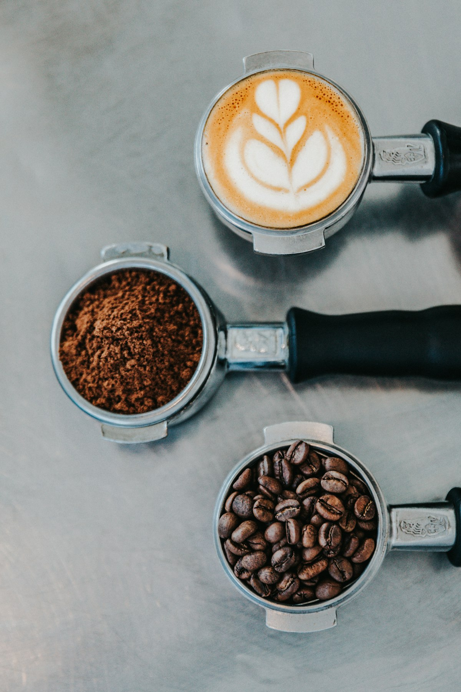

Le Cameroun produit du café Robusta, principalement dans les régions du Littoral, du Centre, du Sud et de l'Est, et de l'Arabica, cultivé en altitude sur les hauts plateaux de l'Ouest et du Nord-Ouest. SOPROCACAM COOP-CA propose ces deux types de café, issus de ses plantations et de son réseau de producteurs membres.
Les cerises sont récoltées à maturité, puis séchées et préparées avec attention pour conserver tout leur potentiel aromatique.

| Caractéristique | Robusta | Arabica |
|---|---|---|
| Régions | Littoral, Centre, Sud, Est | Ouest, Nord-Ouest (hauts plateaux) |
| Profil aromatique | Fort, terreux, faible acidité | Délicat, fruité, acidité modérée |
| Humidité | ≤ 12,5 % | ≤ 12,5 % |
| Conditionnement | Sacs de jute de 60 kg | Sacs de jute de 60 kg |
| Commande minimale | 1 conteneur de 20 pieds | 1 conteneur de 20 pieds |
| Port d'expédition | Douala, Cameroun | Douala, Cameroun |
À maturité.
Sur aires ou claies jusqu'au taux d'humidité cible.
Pour retirer les grains défectueux.
Humidité, calibre, aspect.
Stockage avant expédition.
Authentique, du Robusta à l'Arabica, traçable jusqu'au producteur.
Un tri rigoureux pour ne conserver que les grains de qualité.
Un réseau coopératif solide pour des volumes réguliers.
Du champ au port, un seul contact pour simplifier vos achats.